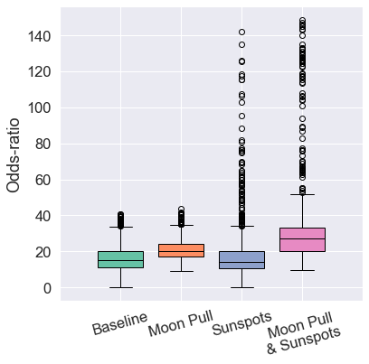
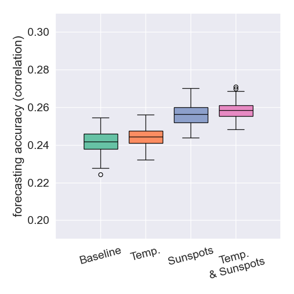
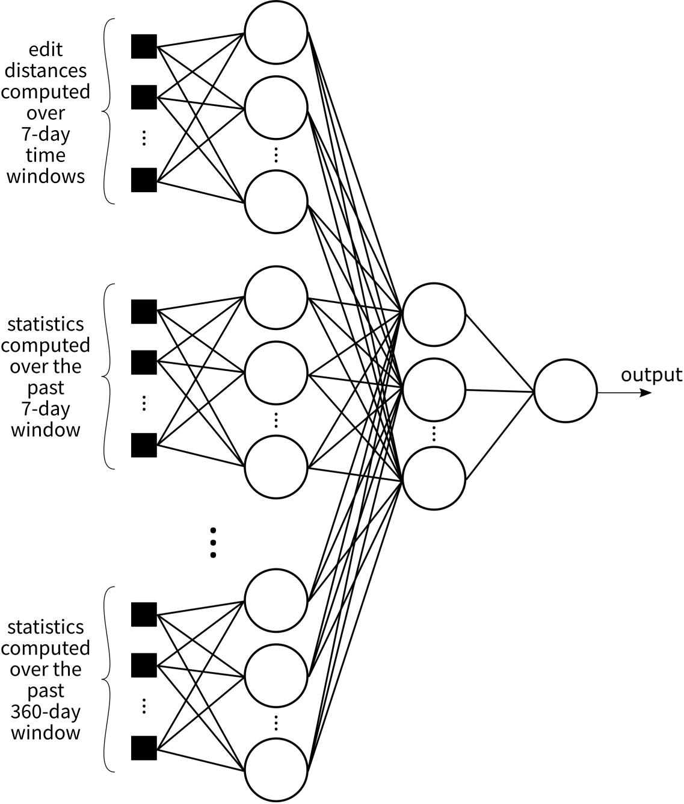

Introduction
- Seismic hazards cause numerous deaths and huge financial losses.
- Earthquake forecasting is known to be extremely difficult.
- Often seen as
elusive and perhaps impossible.
beroza2021machine
- The mechanisms that lead to earthquakes are not sufficiently well known.stein2003introduction
- Mantle convection plays a major role in the movement of tectonic plates.
- Convection causes elastic energy to build up on the faults.
- Elastic-rebound theory:
- Relative plate movement occurs until it is locked.
- Elastic strain energy then builds up on the fault.
- Eventually a fracture occurs, which can result in an earthquake.
Adapted from the original. Original by Xiaohan Song.
Sunspots
- We have also used the sunspot data provided by the American Association of Variable Star Observers. (https://www.aavso.org/)
- Data accessed through https://lasp.colorado.edu/lisird/
- Sunspots are temporary dark areas on the Sun's surface.
- They are caused by intense, concentrated magnetic fields that inhibit convection.
- Indicators of Solar Activity:
- The number of sunspots follows an ~11-year cycle and indicates the Sun's overall activity level.
- High sunspot numbers are linked to more frequent solar flares and Coronal Mass Ejections.
- Influence on Earth:
- CMEs release charged particles that disrupt our magnetosphere.
- High sunspot activity raises the Sun's
Total Solar Irradiance
, which can influence Earth's climate and surface temperatures.hempelmann2012correlation
Source: Solar and Heliospheric Observatory, NASA
Edit Distances
- Let \(P_1\) and \(P_2\) be two marked point processes: $$ P_1 = \{ (t_i, \vec{u}_i) \mid 1 \le i \le N_1 \} \quad\quad P_2 = \{ (s_j, \vec{v}_j) \mid 1 \le j \le N_2 \} $$
- The idea is to transform \(P_1\) into \(P_2\) using primitive operations, each incurring a cost.
-
The primitive operations are:
- Insertion: insert point \((s_j, \vec{v}_j)\) from \(P_2\) into \(P_1\), paying a cost of 1.
- Deletion: remove point \((t_i, \vec{u}_i)\) from \(P_1\), paying a cost of 1.
- Shifting: replace point \((t_i, \vec{u}_i)\) in \(P_1\) by the point \((s_j, \vec{v}_j)\) from \(P_2\), paying a cost of: $$ C\big((t_i, \vec{u}_i), (s_j, \vec{v}_j)\big) = \lambda_0 |t_i - s_j| + \sum_{k=1}^{d} \lambda_k \big| \vec{u}_i(k) - \vec{v}_j(k) \big| $$
- The \(\lambda_k\) are user-defined normalizing constants intended to ensure that the different marks have comparable orders of magnitude.
- The edit distance is defined as the lowest possible cost necessary to transform \(P_1\) into \(P_2\).
Radial Basis Functions
- We use these edit distances with Radial Basis Functions (RBFs) for performing the forecasting.
- Simply put, it finds a functional relation of the form: $$ \hat{y}(\vec{x}, \vec{w}) = w_0 + \sum_{i = 1}^{k} w_i \, \psi\big(d_H(\vec{x}, \vec{c}_i)\big) $$
- Where:
- $\vec{x}$: the point process (e.g., the set of earthquakes in a week) for which we want to make a prediction.
- $\vec{c}_i$: point processes taken from the training set, which will be compared with $\vec{x}$.
- We take $100$ randomly chosen instances $\vec{c}_i$ from the training set.
- $w_i$: adjustable parameters found by least squares.
- $\psi$: taken to be the Gaussian kernel, $\psi(x) = \exp(-x^{2} / \epsilon)$.
- We predict the logarithm of the number of earthquakes, $\log(N + 1)$, in a certain day.
- The predicted values of $\log(N + 1)$ are then correlated with the maximum magnitude by means of Gutenberg-Richter's law.stein2003introduction
Dynamical Systems: A Brief Introduction
- A dynamical system is simply a system whose state evolves over time according to a fixed rule.
- Core Components:
- State: A snapshot of the system at a specific time (e.g., position and velocity of a pendulum).
- State Space: The set of all possible states the system can be in.
- Evolution Rule: A mathematical rule ($f$) that describes how the state $x$ changes over time. $x_{t+1} = f(x_t)$
- Common examples include planetary orbits, weather patterns, and population dynamics.
- Many useful tools in this field:
- State-space reconstruction based on time series of observations
- Prediction by nearest-neighbors
- Tools to detect coupling between two systems
- and a lot more
Example: Lorenz System
- The system of ordinary differential equations:
Example: Hénon Map
- The map function:
- Numerous dynamical systems could be involved in the earthquake generating process.
- One example are the convection flows within the Earth's mantle (Navier-Stokes equations).
- The figure below shows an exaggerated diagram.
Figure author: Surachit
Coupling Detection Methods
- One dynamical system can have a strong influence in another (coupling).
- To measure coupling, we use two methods:
- Hirata et al. (2016)hirata2016plosone
- Andrzejak et al. (2011)andrzejak2011characterizing
- They both rely on the same basic idea:stark1999
- Measure systems $X$ and $Y$ at times $t_0$ and $t_1$, observing $s_X^{t_0}$, $s_X^{t_1}$, $s_Y^{t_0}$ and $s_Y^{t_1}$
- $s_Y^{t_0}$ and $s_Y^{t_1}$ are similar $\overset{\text{?}}{\Rightarrow}$ $s_X^{t_0}$ and $s_X^{t_1}$ are also similar
- Then we say system $X$ drives system $Y$
- Measure systems $X$ and $Y$ at times $t_0$ and $t_1$, observing $s_X^{t_0}$, $s_X^{t_1}$, $s_Y^{t_0}$ and $s_Y^{t_1}$
- $s_Y^{t_0}$ and $s_Y^{t_1}$ are similar $\overset{\text{?}}{\Rightarrow}$ $s_X^{t_0}$ and $s_X^{t_1}$ are also similar
- Then we say system $X$ drives system $Y$

Effects of Lunar and Solar Tidal Forces
- In the master's dissertation, the prediction framework was proposed and the connection between Sun & earthquakes was analyzed.
- Here we continue the line of investigation on external factors that affect earthquakes (or not)
- The difficulty of earthquake forecasting is aggravated by the fact that:
- we cannot yet enumerate all the external factors influencing earthquakes
- or the degree of importance of each of these factors
- Thus, it is essential to make an effort to identify and quantify these external factors
- We began by analyzing tidal forces from the Sun and the Moon
- The influence of tidal forces has been investigated in the literature ide2016naturegeosciencehao2019evidence
- However, either:
- they analyze only correlation, without assessing its applicability in prediction;
- or they perform predictions for larger time frames (above 15 days)
- + the prediction frameworks used are different than ours
- Tidal forces are theorized to influence earthquakes due to its ability to deform the continental crust
- This could play a significant role in the rate of elastic strain energy accumulation in faults
- Most importantly, it could be a significant agent that causes the initial crack (nucleation) that develops into an earthquake
- We simulated the trajectories of the Sun and Moon using the Python library Astropy.
- With this we could calculate:
- hourly differential pulls on each region
- differential pull at the place and time of each earthquake in our catalogs
- To include sunspot and Moon tidal force data into the above framework, we modify our framework as follows: $$ \hat{z}(\vec{x}, \vec{y}^{(1)}, \vec{y}^{(2)}, \vec{w}) = w_0 + \sum_{i = 1}^k \bigg[ w_i \, \psi\big( d_X(\vec{x}, \vec{c}_i) + \kappa_1 d_E(\vec{y}^{(1)}, \vec{y}^{(1)}_{\vec{c}_i}) + \kappa_2 d_E(\vec{y}^{(2)}, \vec{y}^{(2)}_{\vec{c}_i}) \big) \bigg], $$
- Where:
- $\vec{y}^{(1)}$: vector containing the 7 sunspot numbers referring to the same week as $\vec{x}$
- $\vec{y}^{(1)}_{\vec{c}_i}$: same as above, but referring to the same week as $\vec{c}_i$;
- $\vec{y}^{(2)}$: the $168$-dimensional vector containing the hourly tidal force collected over the 7-day window
- $d_E()$: the Euclidean distance
Tidal Force Calculation: Differential Pull
- What is commonly called
tidal force
is more accurately a differential pull. - It arises because the Moon's gravitational pull has varying intensity across the Earth's diameter.
- The approximate differential pull on an object at the Earth's surface is given by:sawicki1999myths $$ \frac{2 G m_M r_E}{d_M^3} $$
- A similar effect occurs on both the near and far sides of the Earth.
Calculation Methodology
- We calculated differential pulls at hourly intervals for all earthquake catalogs.
- Instead of using analytical models, we used high-accuracy historical positions of the Earth, Sun, and Moon from the Astropy library.agnew2005earthlongman1959formulas
- This approach is preferable as it inherently accounts for:
- Variability in the Moon's sidereal period (~3.5 hours).
- Complex gravitational interactions from other celestial bodies.
- Astropy can also provide accurate trajectory estimations for the near-future forecasting required by our model.
- Our work focuses on detecting causality, not just correlation.san2014unraveling
- We investigated two main questions:
- Is there a causal link from lunar effects to earthquakes?
- Can tidal forces data improve earthquake forecasting accuracy?
Causality: Andrzejak et al. Methodandrzejak2011characterizing
- Found evidence of Moon influencing earthquakes ($Y \rightarrow X$).
- Coupling measure $|L(Y \rightarrow X)| \gg |L(X \rightarrow Y)|$.
- Histograms for $L(Y \rightarrow X)$ (left) show irregular, slanted distributions, indicating coupling.
- Histograms for $L(X \rightarrow Y)$ (right) are nearly uniform, indicating no coupling.
Causality: Hirata et al. Methodhirata2016plosone
- Unidirectional coupling was also identified using this method.
- Generally, $p$-values for the Moon-to-earthquake ($Y \rightarrow X$) direction were much smaller than for the reverse direction.
- Exception: The Japan catalog, where the relation was inverted, possibly due to stochastic factors.
- Overall Conclusion: The collective results from both methods provide evidence for a causal coupling from the Moon to earthquakes.
Correlation: Tidal Force vs. Magnitude
- We also investigated the direct relationship between differential pull and earthquake magnitude.
- This analysis focuses on correlation to corroborate the causality findings.
- We calculated the average differential pull for earthquakes with magnitude $\ge m$, for various values of threshold $m$.
Correlation Findings
- Clear Trend: The average differential pull increases with the magnitude threshold across all catalogs.
- This indicates a tendency for larger-magnitude earthquakes to occur during periods of higher tidal force.
- However, the trend is moderate:
- The increase is only 9.3% to 31.1% over the overall mean pull.
- Major earthquakes do not occur exclusively at moments of peak tidal force.
- Main Finding: A persistent positive correlation exists between lunar tidal force and earthquake magnitudes.
Correlation: Hypothesis Testing
- Compared differential pulls of the 20% lowest magnitude earthquakes against those above various higher thresholds (e.g., >5, >5.5, >6).
- Used a Wilcoxon rank-sum test to compare the median differential pulls of these two groups.
- Alternative Hypothesis: "Earthquakes with larger magnitudes have larger differential pulls."
- Result: The null hypothesis was rejected in over two-thirds of the cases (at a 5% significance level).
- This further supports that larger differential pulls are associated with larger-magnitude earthquakes.
Improving Forecasting Accuracy
- Goal: Verify if Sun (sunspots) and Moon (differential pulls) data improve forecasting accuracy.
- Method:
- Forecast the log-number of earthquakes: $\log(N+1)$.
- This is then correlated with maximum magnitudes (Gutenberg-Richter law).
- Accuracy Metrics:
- Correlation
- Odds-Ratio (balances true/false positives)
Example forecasts for New Zealand
Forecasting Results: Japan
Japan (Nationwide)
- Moon data slightly improves correlation.
- Best correlation gain (+5.37%) with Moon + Sun data.
- Odds-ratio only improves (+3.51%) when both are combined.
Touhoku Region

- Higher baseline accuracy.
- Significant accuracy gains.
- Correlation up to +29.62%.
- Odds-ratio up to +76.63%.
Forecasting Results: New Zealand & Balkan Region
New Zealand
- Sunspot data most relevant for correlation (+8.86%).
- Combined data yielded best odds-ratio (+5.72%).
Balkan Region
- Smaller subregion yielded higher correlations.
- Substantial increases in both metrics from Sun or Moon data.
- The highest accuracy is achieved when all data types were used simultaneously.
Conclusion: Summary of Findings
- Presented significant evidence that seismic activity is influenced by tidal forces from the Sun and the Moon.
- Moon's Influence:
- Established a unidirectional causal link (Moon's motion drives earthquakes).
- Found a slight-to-moderate tendency for larger earthquakes to occur during periods of higher tidal force.
- Forecasting: Demonstrated that next-day magnitude forecasting accuracy improves when using lunar data, and even more so when combining lunar and sunspot information.
Pinpointing the Sun-Earthquake Mechanism
- Previous work established a causal link: solar activity influences earthquakes.junqueira2022solar
- However, the physical mechanism behind this link is still an open question. Potential pathways include:
- Interactions with the geomagnetic field
- Emission of solar particles
- Tidal forceside2016naturegeoscienceyabe2015tidal
- Our hypothesis: The thermal energy (heat) transfer from the Sun is a major player in driving changes in the Earth's surface temperature.
- If it is a major player, then we can say it is being neglected in the literature.
Potential Mechanisms by Which Heat Could Affect Earthquakes
-
Thermal Stress
- Temperature variations can induce thermal stress in rocks, altering their mechanical properties and contributing to fracture kang2019review.
- While surface heat penetration is slow, it can affect deeper layers over long timescales.kalogirou2004measurements
- However, these thermally-induced stress changes are generally considered minor compared to tectonic forces.
-
Hydrological Cycle
- Atmospheric temperature variations influence the hydrological cycle (evaporation, precipitation).
- This impacts subsurface water flow and pore pressure within faults, potentially triggering earthquakes.wang2021earthquakes
- Seasonal changes like snow/ice melting can alter pore pressure and load the Earth's crust.
- Example: Fluid migration from snowfall may have triggered the M7.6 Noto, Japan earthquake in 2024.wang2024untangling
-
Atmospheric Pressure
- Changes in atmospheric pressure can induce small-scale clamping and unclamping of faults.liu2009slow
- A recently identified phenomenon is "stormquakes", where intense storms generate seismic waves in the crust.fan2019stormquakes
- Mechanism: Storm-induced ocean waves exert pressure on the seafloor, causing vibrations within the oceanic crust.gualtieri2018persistent
- Thus, several plausible mechanisms have been proposed to explain how solar and atmospheric phenomena may influence seismic events.
- However, the supporting evidence for these mechanisms remains largely inconclusive.
- This underscores a clear need for further investigation into this area.
Seasonal Variation of Earthquake Location
- Analyzed the correlation between earthquake latitude and magnitude in the northern hemisphere, differentiated by season.
- A statistically significant lower correlation is observed during the winter ($p = 0.002$ via t-test).
- This indicates that larger earthquakes have a slight tendency to occur at higher latitudes during all seasons except for winter.
- This result points to a driving force connected to both latitudinal position and the cycle of meteorological seasons.
- Solar heat fits this description well, strengthening the hypothesis that it is a significant mechanism for the Sun's influence on earthquakes.
Are Solar Activity & Earthquakes Deterministic or Stochastic?
- We employed recurrence plots to test whether the time series are deterministic or stochastic.
- Methodology from Hirata, Y. (2021)hirata2021recurrence was used to count the variety of
recurrence triangles.
- Exponential growth of triangle varieties suggests a deterministic system.
- Super-exponential growth suggests a stochastic system.
- Both solar activity and earthquake occurrences exhibit super-exponential complexity, indicating they are stochastic.
- This suggests that a portion of the stochasticity in seismic activity is inherited from the Sun
Illustration of a recurrence plot and recurrence triangles.
Super-exponential growth of recurrence triangle varieties for sunspots and earthquakes.
Mutual Information Confirms Shared Stochasticity
- Mutual information was used to quantify the statistical dependency (linear and non-linear) between the two systems. $$ I(X; Y) = \sum_{x \in X} \sum_{y \in Y} p(x, y) \log \left( \frac{p(x, y)}{p(x)p(y)} \right) $$
- Mutual information is non-zero and significantly larger than that calculated with random noise.
- This demonstrates that information is shared between the two systems, reinforcing the physical connection.
The Sun-Earthquake Time Lag
- A key aspect of the Sun-earthquake relationship is the time lag between cause and effect, which has been largely overlooked in the literature.
- Mechanisms for solar influence require significant time to manifest.
- Thermal energy from the Sun may take weeks or months to accumulate and impact secondary processes (e.g., ice melting, atmospheric pressure changes).
- Oceans act as substantial heat reservoirs, leading to semiannual or longer delays in thermal energy dissipation.pan2023annual
- Persistent atmospheric patterns and long-term feedback mechanisms can further extend these timescales.seneviratne2010investigating
- Research Question: What is the time lag between changes in solar activity and their subsequent effects on Earth's seismicity?
- Used daily sunspot numbers with various time lags to forecast maximum earthquake magnitudes.
- The plots show how forecasting accuracy changes when sunspot data is time-lagged.
- Lags that offer statistically significant improvements (Bonferroni corrected $p < 0.05$):
- Japan: 30, 120, 180, 240, 300 days
- Greece: 30, 90, 120, 150, 180, 300 days
- New Zealand: 60, 90, 120, 150, 180, 300, (...) days
- A delay of 120 days is the first significant lag common to all three regions, possibly related to seasonal changes.
- Recall that the mutual information for a zero-day lag was substantially lower than the peak values observed at non-zero lags.
- This further supports the existence of a delayed cause-effect relationship.
- Thus, in summary:
- A time lag exists between changes in solar activity and their effects on terrestrial seismic activity.
- Introducing a time lag to sunspot data almost always improves forecasting performance.
- A single, universal value for this delay does not exist; it is region-specific.
- The existence of a range of effective delays is physically plausible due to the multiple mechanisms by which thermal energy can trigger earthquakes (e.g., ice melt).
Contribution of Surface Temperature Data
- Data on daily average air temperatures from Tokyo, Stylida, and Wellington can, in most cases, improve the prediction of next-day maximum earthquake magnitudes.
- The scatterplot for Japan shows how including solar and temperature data improves forecasts.
- The baseline model (using only earthquake data) tends to overestimate the maximum magnitudes.
Forecasting Results: Japan
- The results clearly indicate that incorporating surface temperature data helps to improve prediction accuracy.
- Combining both sunspot and temperature data achieved the highest correlation among all settings tested for this region.
any depth
depth < 100km
depth < 50km
depth < 30km
- The results strengthen the idea of a causal connection between surface temperatures and earthquake magnitudes.
- The incremental improvement from using both datasets is modest, indicating informational redundancy.
- This redundancy suggests that the Sun influences earthquakes via the same thermal pathway by which it drives surface temperatures.
Forecasting Results: Balkans
- The inclusion of sunspots overall provided better improvements than surface temperatures.
- The highest correlation for this region was achieved when both sunspot and temperature data were used in conjunction.
- The biggest improvements were observed when restricting the dataset to shallow earthquakes
 any depth
depth < 100km
any depth
depth < 100km
depth < 50km
depth < 30km
- The results strengthen the idea of a causal connection between surface temperatures and earthquake magnitudes.
- The incremental improvement from using both datasets is modest, indicating informational redundancy.
- This redundancy suggests that the Sun influences earthquakes via the same thermal pathway by which it drives surface temperatures.
Forecasting Results: New Zealand
- Using temperature data yields a correlation that is not statistically different from the baseline.
- Using sunspot data results in a significantly better correlation.
- The importance of temperature data becomes more pronounced as earthquake depths are restricted to be shallower.
 any depth
any depth
depth < 100km

depth < 50km
depth < 30km
- The results strengthen the idea of a causal connection between surface temperatures and earthquake magnitudes.
- The incremental improvement from using both datasets is modest, indicating informational redundancy.
- This redundancy suggests that the Sun influences earthquakes via the same thermal pathway by which it drives surface temperatures.
Variations Depending on Earthquake Depth
- Many natural phenomena that influence earthquakes (ice melt, sea-level changes, storms) primarily exert their effects at shallow depths.
- These phenomena are often linked to atmospheric temperature and sunspot activity.
- Idea: If temperature and/or sunspots influence earthquakes, the intensity of this effect should vary with earthquake depth.
Japan
Balkans
New Zealand
any depth
depth < 100km
depth < 50km
depth < 30km
A sharp increase in correlation is observed as the depth threshold is decreased.
In absolute value, the greatest improvement in Temp & Sunspots comes when using depth < 30km.
In almost all cases, Temp & Sunspots yields the best prediction accuracy.
When depth < 30km, Temp & Sunspots always yields the best accuracy.
Analyzing the Evidence
- The idea that atmospheric temperature affects earthquakes is accepted, but is the influence significant or negligible? Our results provide insights.
- Seasonal Variation:
- The existence of seasonal variation in earthquake locations points to the importance of seasonal drivers like atmospheric temperatures, ice melt, and storms.
- Delayed Cause-and-Effect:
- The time lag between solar activity and seismic response is on the order of 1 to several months.
- This aligns with long-term effects of surface temperature penetrating the Earth's crust.
- Surface temperature data improves predictability, strengthening this hypothesis.
- Informational redundancy between solar and temperature data suggests a common thermal pathway.
- Shallow Earthquakes:
- Predictability improves when analysis is restricted to shallow earthquakes.
- This is consistent with surface-level phenomena (driven by temperature) primarily affecting the upper crust.
- To sum up:
- We found solid evidence, from various different kinds of analysis, showing the significance of thermal energy.
- It is on par, if not greater, than other possibilities.
- Future work should work on narrowing it down further (hydrological effects, atmospheric pressure, etc).
Neural Networks in Earthquake Forecasting
- We have extensively analyzed the applications of edit distances.
- Edit distances allow us to extract a very particular kind of information from earthquakes.
- How can we concilliate our results with what is in the literature (e.g. statistical indicators)?
- Neural Networks (NNs) are flexible tools for discovering complex patterns useful for prediction.asencio2016sensitivity
- However, a common trend is to progressively increase model size and depth, hoping greater capacity yields better performance.
Author: BrunelloN on WikiMedia
A Problematic Tendency
- From a Statistical Learning Theory (SLT) perspective, this is an issue.luxburg2011statistical
- Expanding a network's architecture increases its capacity (e.g., VC dimension), heightening the risk of overfitting.vapnik1998statistical
- The common response is regularization (dropout, early stopping, etc.).
- However, this is not a complete solution for seismic forecasting:
- With limited and noisy data, even well-regularized large models can produce unstable results.
- Heavy regularization on oversized models can be difficult to interpret.
Author: BrunelloN on WikiMedia
Our Approach: Capacity-Aware Model Design
- We advocate for a complementary approach: careful, capacity-aware model design combined with principled feature selection.
- Instead of starting with a large model and
taming
it, we design models whose capacity is constrained to reflect our domain knowledge. - Benefits:
- Parsimony: Reduces effective capacity and the sample size required for reliable generalization.
- Interpretability: Enforcing structure makes it easier to trace which inputs contribute to a forecast.
- Robustness: Aligning architecture with geophysics is more likely to learn physically plausible representations.

The Core Problem in Statistical Learning Theory
- The goal of a learner is to find a function \(f\) that minimizes the true risk (generalization error): \[ R(f) = \mathbb{E}_{(x,y)\sim\mathcal{D}}\big[\,\ell(f(x),y)\,\big] \]
- However, we can only minimize the empirical risk on our training sample \(S\): \[ \hat{R}_n(f) = \frac{1}{n}\sum_{i=1}^n \ell(f(x_i),y_i) \]
- Central Question of SLT: Under what conditions does a small empirical risk imply a small true risk?
- The answer depends on the space of admissible functions \(\mathcal{F}\) (the set of all possible models the learner can choose from).
- The generalization gap is bounded by the complexity, or capacity of \(\mathcal{F}\): \[ \big|R(f) - \hat R_n(f)\big| \le \mathcal{N}(\text{capacity of } \mathcal{F}, n) \]
- A larger, more complex \(\mathcal{F}\) increases the risk of overfitting.
The Importance of Capacity Control
- This leads to the classic bias-variance trade-off:
- If \(\mathcal{F}\) is too small (low capacity): high bias (model can't capture the underlying pattern).
- If \(\mathcal{F}\) is too large (high capacity): high variance (model fits noise in the training data).
- The key is to precisely control \(\mathcal{F}\) so it's small enough to prevent overfitting, but large enough to contain the function we're looking for.
- Two Strategies for Capacity Control:
- Directly restrict the space \(\mathcal{F}\): Our primary approach. Design a smaller, dedicated architecture (e.g., fewer parameters, constrained connectivity). This is a more principled way to incorporate domain knowledge.
- Regularization: Penalize complexity while searching in a larger space (e.g., \(\ell_1, \ell_2\), dropout, early stopping). A complementary, but less direct, technique.
- Our Argument: Many ML approaches for earthquake forecasting use unnecessarily large \(\mathcal{F}\) and rely only on regularization. We propose a carefully designed, lower-capacity architecture tailored to the problem.
Space of Admissible Functions: $\mathcal{F}$
A Capacity-Aware NN Architecture
- Motivated by SLT, we designed a custom neural network with deliberately reduced capacity.
- How? By constraining the first layer to be not fully connected, we reduce the space of admissible functions \(\mathcal{F}\) without sacrificing expressiveness.
- Core Innovations:
- Calculating seismicity indicator features over various time-window lengths (short-term and long-term).
- Inclusion of edit distances and seismicity indicators in the same prediction framework
- A hierarchical neural network where the first layer has dedicated subnetworks for each time-window length.
Hierarchical Architecture & Features
Seismicity Indicators (per window):
- T-value
- Mean magnitude
- Rate of sqrt-seismic energy
- Time since first large event
- Gutenberg-Richter slope & intercept
- GR fit error
- Magnitude deficit
- Coefficient of variation of inter-event times
How It Works: A Two-Stage Approach
- Indicators are computed for windows of 7, 15, 30, 60, 90, and 180 days to capture different temporal scales.
- Stage 1: Subnetwork Stage
- Each time-window's set of indicators is fed exclusively into its own dedicated subnetwork.
- This allows for specialized feature extraction unique to each temporal scale, limiting cross-scale interference.
- Stage 2: Integration Stage
- The outputs of all subnetworks are concatenated and passed to a fully connected layer.
- This integrates the multi-scale representations into a unified latent space for the final prediction.
- This design is consistent with SLT: it restricts \(\mathcal{F}\) to respect the data's hierarchical structure.
Preliminary Results
- Applied to catalogs from New Zealand, Japan, and the Balkans.
- Average improvement in forecasting accuracy:
- ~11.8% vs. radial basis functions.
- ~10.6% vs. NN with only edit distances.
- Achieved comparable results to literature with a more reliable model (fewer layers, >10x fewer parameters).
- The model is in its early stages and shows great promise for future improvement.
Japan Prediction Results
- The proposed neural network was then used to analyze interregional seismic interactions.
- The literature provides strong evidence that distant seismic regions are interconnected through both statistical correlations and physical triggering mechanisms.
- Large-Scale Stress Transmission & Correlation:
- Tectonic forces transmit stress over vast distances, causing synchronous seismic variations.
- Network analysis has revealed strong correlations between regions in Japan over 1000 km apart.tenenbaum2012earthquake
- Correlations also exist between seismicity at different depths in distinct areas.takayama1992correlation
- Long-Range & Long-Term Triggering:
- Triggered seismic activity can persist for days after surface waves pass, behaving like aftershocks.
- Major earthquakes can follow large events in neighboring regions within a 3-5 year timeframe.mantovani2010long
- This body of work provides a strong rationale for investigating whether data from one region can improve earthquake forecasting in another.
Methodology
- To analyze causal links, Japan and New Zealand were divided into subregions based on centroids over tectonic plate boundaries.
- Three Experimental Settings:
- Cross-region nowcasting: Data from region A predicts current 30-day max magnitude in region B.
- Cross-region forecasting: Data from A predicts next 30-day max magnitude in B.
- Joint-region forecasting: Data from A + B predicts next 30-day max magnitude in B.
Cross-Region Nowcasting Results
- Mixed positive and negative correlations, but the average was statistically positive in both directions (JP → NZ and NZ → JP).
- For example, predictions for NZ subregion 1 (Lake Pearson) showed a clear positive correlation.
- Interpretation: The connection suggests the earthquake generating processes in both regions might share a common driving force.
Forecasting & Joint-Region Results
- Cross-Region Forecasting:
- Observed a positive average correlation when using JP data to predict NZ, and vice-versa.
- Example: NZ subregions 7 (Whanganui) & 8 (Wellington) helped forecast for JP subregion 8 (Nagaoka).
- Joint-Region Forecasting:
- On average, adding data from the distant region did not improve local forecasting accuracy.
- However, some NZ subregions (2, 7, 8) did benefit significantly from JP earthquake data.
- Thus, the information brought by including data from another region could be in some sense redundant.
Conclusions on Inter-Regional Causality
- Our findings suggest a causal connection exists between seismic activity in Japan and New Zealand.
- However, we did not find strong evidence that distant earthquake data adds predictive value when combined with local data.
- Main Hypothesis: The observed causality may stem from shared underlying drivers rather than direct triggering mechanisms that could enhance forecasting.
- The lack of improvement could also be due to limitations of the current model, warranting further investigation.
Thesis Contributions: A Multi-faceted Analysis of Edit Distances
- This thesis analyzes the use of edit distances in earthquake forecasting from several novel perspectives:
- Efficient Computation:
- Streamlined edit distance calculation, leveraging parallel computing to make the analysis of large seismic datasets feasible.
- Theoretical Grounding (during my master's):
- Formulated the forecasting problem on a solid theoretical basis, using Huke's embedding theorem to justify time-windows and edit distance as a natural metric between them.
Thesis Contributions: A Multi-faceted Analysis of Edit Distances
- Dynamical Systems Perspective:
- Conducted a deep analysis of the coupling between earthquakes and other dynamical systems (the Sun and Moon).
- Results indicate a link between lunar tides to seismicity, with a strong correlation between differential pulls earthquake magnitudes.
- Provided strong evidence for a thermal pathway linking solar activity to seismicity, improving forecast accuracy.
- Bridging Methodologies:
- Pioneered the integration of our edit distance framework with what is most often used in the literature: statistical indicators.
- This is done by proposing a novel hierarchical neural network architecture.
Overall Conclusion & Future Outlook
- This work establishes edit distance as a powerful, theoretically-grounded, and computationally feasible tool for earthquake forecasting.
- Future Directions (this semester):
- Development and refinement of the hierarchical neural network to effectively combine diverse precursor data.
- Inclusion of other statistical indicators.
- Testing other types of generic layers (e.g. RNNs).
- Testing other types of hand-crafted layers ()
- Completion of the joint-region analyses, including the Balkan region.
- Development and refinement of the hierarchical neural network to effectively combine diverse precursor data.
Thank You!